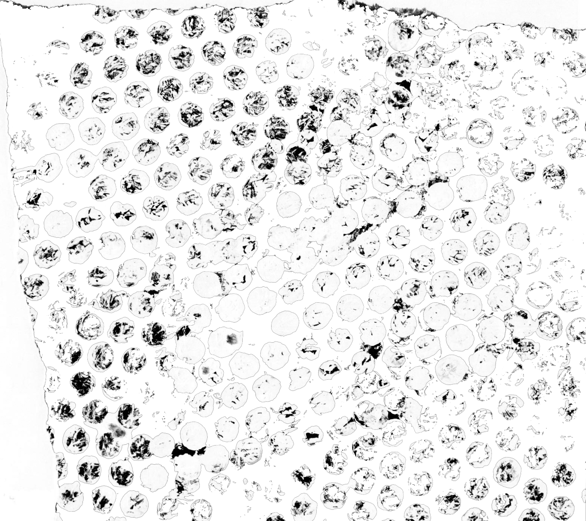
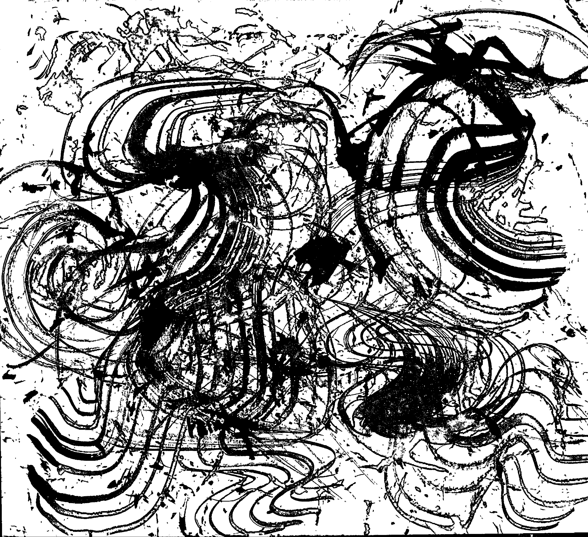

Table of Contents
1. Beneath the Eaves

I used this texture for the introduction of the text because it introduces the dark aesthetic of Japanese Architecture, and introduces it’s rich detail. This section discusses “a heavy darkness that hangs beneath the eaves.” In an abstract way, this texture felt the most fitting.
2.Wind and Rain

I used this texture for the next section of text because it is even and very translucent- it is reminiscent of water droplets. It is therefore a direct parallel to the discussion of weather in this section of the text.
3. paper-paneled doors

The discussion of “pale glows” and “flower arrangements” felt ghostly and delicate, which I feel that this texture is in contrast to the others. This section is soothing to read and therefore the text is smoothly integrated into the image.
4. invisible brush strokes

This last section of text feels the most alternative and grunge. Words such as “clever,” “strike” and “emptiness” create a swirling atmosphere of intricacy in the description of Japanese architecture. The discussion of brush strokes is evoked both literally and figuratively through this texture.